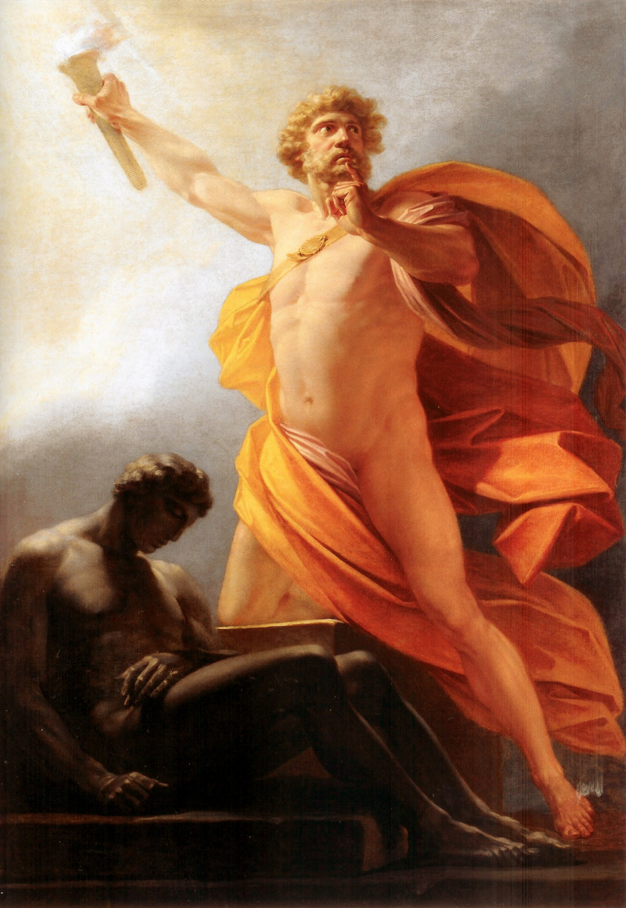

Prometeu e a vida ativa
Leituras
Capítulo O mundo dos humanos em VERNANT, Jean Pierre. O Universo, os deuses, os homens. São Paulo, SP: Cia das Letras, 2010. 209 p.
e
Capítulo 1, subtítulo 1 A vita activa e a condição humana (p. 15 a 20) em ARENDT, Hannah. A condição humana. 10.ed. Rio de Janeiro,: Forense, 2001. 352 p. ISBN 8521800215 (Broch.)
Guia para discussão
O mundo dos humanos
- Quem é Prometeu?
- Quais são os principais fatores na divisão entre deuses e homens?
- Como funcionam os ardis de Prometeu?
A divisão entre deuses e humanos
- Quais as diferenças entre a vitalidade divina e a humana? E a mortalidade?
- Qual o impacto da primeira punição de Zeus?
O fogo roubado
- Pensando no conceito de labor e trabalho de Arendt, o que simboliza esse momento após o roubo do fogo?
- Qual é o objetivo da ênfase nos alimentos no relato mítico?
O surgimento da mulher
- Qual característica humana é simbolizada pelo apetite atribuído à mulher?
- Como esse relato se relaciona com as condições de vida da mulher na Grécia antiga?
A caixa de Pandora e a punição de Prometeu
- Como é o mal que aparece na caixa? Quais são suas principais características e que temática é trazida a tona em sua descrição?
- Como interpretar o papel da esperança na história de Pandora?
Ideias centrais no trecho de A condição humana
- Labor
- Trabalho
- Ação
- Eternidade e imortalidade
O principal tema é discutir as condições básicas sobre as quais a existência humana se dá na Terra. Disso, a autora aponta três conceitos centrais:
Labor. A atividade correspondente ao processo biológico do corpo humano, suas necessidades vitais.
Trabalho. A atividade correspondente ao que é não-natural das exigências do homem. Aquilo que não está submetido ao ciclo vital da espécie. O mundo criado pelo artifício humano.
Ação. Atividade que se dá entre humanos correspondente a sua pluralidade, a sua diversidade.
Ela aponta para a relação entre vita activa e natalidade / mortalidade.
Os humanos são seres condicionados já que todas as coisas com que entram em contato tornam-se imediatamente parte de sua condição de existência. (p. 23)
Questão: Condição humana não é o mesmo que natureza humana. O que isso quer dizer?
Se temos uma natureza ou essência, somente um deus pode conhecê-la e defini-la, e o primeiro requisito seria que falasse de um “quem” como se fosse um “que”. (p. 24)
As nossas condições de existência não podem explicar nossa essência (se é que existe) pois nunca nos condicionam absolutamente.
Os modos da vida livre e a relação com a vida material: da cidade-estado grega à vida política medieval, passando por Santo Agostinho.
Longa discussão sobre o papel da contemplação e da teoria em relação à vita activa, sua hierarquização nos sistemas grego e cristão e a importância de restabelecer as distinções dentro da vita activa.
A distinção entre imortalidade e eternidade é fecunda pra discussão mitológica. Por quê?

Prometeu traz o fogo à humanidade, de Heinrich Füger, 1817.